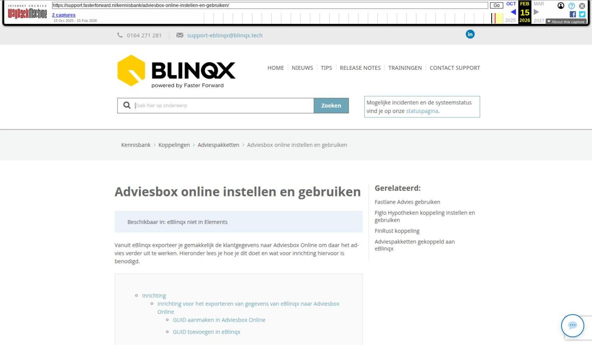

Adviesbox online instellen en gebruiken

Tekstinhoud
Adviesbox online instellen en gebruiken | Support
---
Adviesbox online instellen en gebruiken
Beschikbaar in: eBlinqx niet in Elements
Vanuit eBlinqx exporteer je gemakkelijk de klantgegevens naar Adviesbox Online om daar het advies verder uit te werken. Hieronder lees je hoe je dit doet en wat voor inrichting hiervoor is benodigd.
Inrichting
Inrichting voor het exporteren van gegevens van eBlinqx naar Adviesbox Online
GUID aanmaken in Adviesbox Online
GUID toevoegen in eBlinqx
Inrichting voor het exporten van gegevens van Adviesbox Online naar eBlinqx
Inrichting eBlinqx
Inrichting Adviesbox Online
Klantgegevens exporteren vanuit eBlinqx naar Adviesbox Online
Dossier importeren in Adviesbox Online
Inrichting
Om de klantgegevens naar Adviesbox Online te exporteren en de aanvraag vanuit Adviesbox Online naar eBlinqx te sturen is er inrichting benodigd in zowel eBlinqx als Adviesbox Online.
Inrichting voor het exporteren van gegevens van eBlinqx naar Adviesbox Online
Om de gegevens te kunnen exporteren moet er een koppeling zijn tussen Adviesbox Online en eBlinqx. Deze koppeling wordt in stand gebracht door middel van een GUID. Deze GUID maak je (eenmalig) aan in Adviesbox Online en voeg je vervolgens (eenmalig) toe in eBlinqx.
GUID aanmaken in Adviesbox Online
De GUID kan je in Adviesbox Online aanmaken indien je de juiste (beheer) rechten hebt. Om de GUID in Adviesbox Online aan te maken ga je naar Instellingen – Beheer partijen – Software koppelingen. Hier klik je op de instellingenknop achter 'Elements via Importkoppeling'.
Vanuit daar genereer je de GUID door op te knop 'GUID genereren' te klikken. Via het kopieer-icoon kopieer je de GUID. Via de knop 'Bevestigen' sla je de GUID op.
GUID toevoegen in eBlinqx
De (gekopieerde) GUID moet je toevoegen in eBlinqx. Deze stel je per kantoor/deelnemer in. De GUID hoeft in principe niet uniek te zijn. Heeft ieder kantoor zijn eigen Adviesbox Online dan zal ieder kantoor/deelnemer in zijn Adviesbox Online wel een eigen GUID aan moeten maken. De juiste GUID moet dan onder het juiste kantoor/deelnemer in eBlinqx komen te staan.
De GUID voeg je toe, indien je de juiste rechten hebt, via Beheer – Organisatie & Personen – betreffende kantoor – tabblad Instellingen. Hier vind je Adviesbox Online terug. Via het plusicoon kan je de GUID toevoegen.
Je kiest dan voor Koppeling Key. In het veld 'Waarde' plak je de GUID en je slaat op.
Inrichting voor het exporten van gegevens van Adviesbox Online naar eBlinqx
Wanneer je jouw advies hebt gemaakt in Adviesbox Online dan wil je deze versturen naar eBlinqx om deze vanuit daar te versturen naar de geldverstrekker. Ook voor deze route is er inrichting benodigd in zowel Adviesbox Online als eBlinqx.
Inrichting eBlinqx
In eBlinqx moet de API correct ingeregeld worden. Dit moet gedaan worden door een medewerker van Blinqx. Stuur hiervoor een e-mail naar support-eblinqx@blinqx.tech.
Inrichting Adviesbox Online
De API gegevens die zijn ingericht in eBlinqx moeten ook verwerkt worden in Adviesbox Online om zo de koppeling tot stand te brengen. De medewerker van Blinqx zal deze API gegevens per e-mail en sms naar je verzenden. In Adviesbox Online vul je deze gegevens in via Instellingen – Beheer partijen – Software koppelingen. Hierbij zet je 'Elements' op actief. Vervolgens open je de instellingen. Vanuit daar kan je de API gegevens invullen. In deze handleiding lees je er meer over.
Klantgegevens exporteren vanuit eBlinqx naar Adviesbox Online
Als alle instellingen juist staan kan je de klantgegevens vanuit eBlinqx exporteren naar Adviesbox Online. Dit via het klantdossier – tabblad Export – Adviesbox. Hier kies je eerst de bron. Vervolgens selecteer je welke Adviesbox variant je wilt gebruiken. Staat Adviesbox Online correct ingericht dan staat de bulletpoint automatisch op Adviesbox Online. Is deze niet correct ingericht dan verschijnt er een melding in dit tabblad.
Staat alles juist dan klik je op 'HBX exporteren'. Het bestand wordt geëxporteerd naar Adviesbox Online.
Dossier importeren in Adviesbox Online
In Adviesbox Online moet het dossier worden geïmporteerd. Op het dashboard verschijnt hiervan een melding. Je klikt op het dossier wat je wilt importeren.
In het volgende scherm klik je op 'Dossier importeren' om dit daadwerkelijk te doen.
Dan kan je starten met het opstellen van het advies.
Laatste update: 31 oktober 2025
Was deze informatie nuttig?
Ja Nee